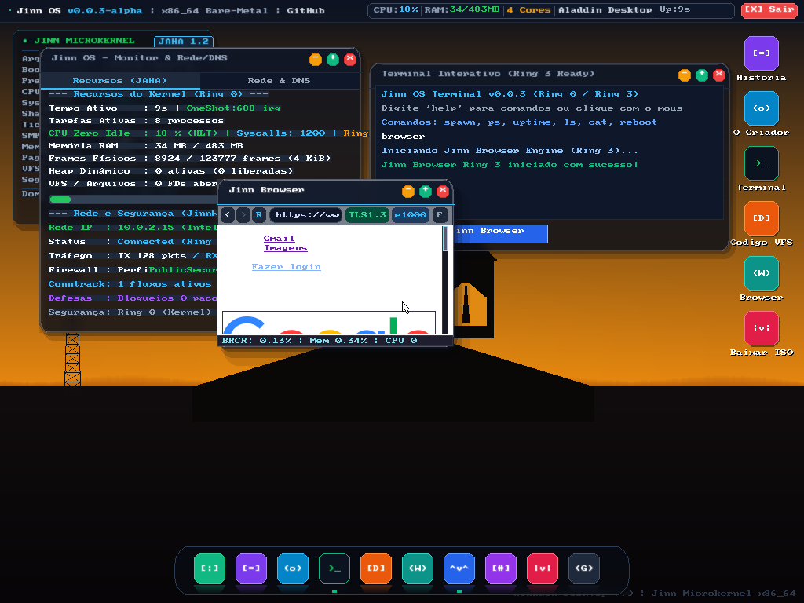
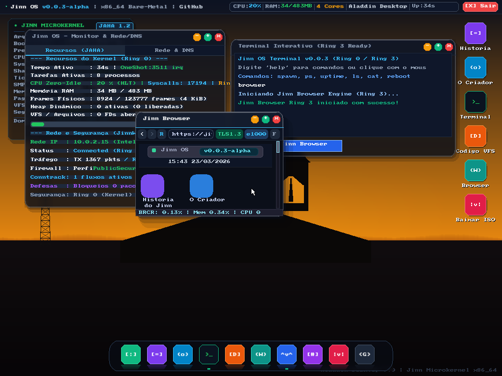
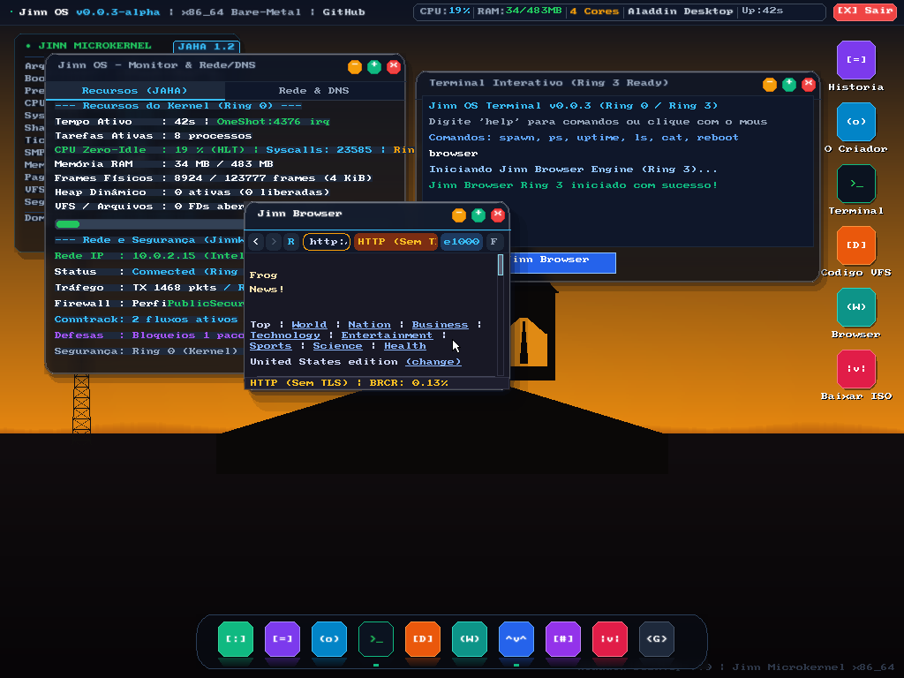

Por que Sites Reais Eram Bloqueados no Jinn Browser: Bug RFC 8017 RSA-PSS, Limite de 16 SANs e Política de Fallback
Após ativar a validação estrita de certificados X.509/SAN e assinaturas CertificateVerify no Jinn Browser (Ciclo 1), testes em domínios públicos reais no QEMU revelaram bloqueios espúrios em portais como jinn-os.dev.br, google.com, en.wikipedia.org, 68k.news e subrecursos de CDN. A investigação isolou um defeito sutil de ordenação de máscara na implementação da RFC 8017 (EMSA-PSS-VERIFY) — que falhava exatamente metade das assinaturas RSA-2048 válidas — e um corte estático em MAX_SAN_ENTRIES = 16, levando o navegador de falhas intermitentes para 14/14 sites reais carregados com sucesso preservando 100% da proteção anti-downgrade.
1. Diagnóstico Detalhado do que foi Levantado
Ao sondar múltiplos destinos públicos reais diretamente no QEMU com -device e1000 -smp 4, os logs seriais ([DIAG-FLOW] e [BROWSER-SEC]) mostraram três causas raiz distintas:
-
Falsa rejeição de 50% nas assinaturas RSA-PSS (RFC 8017 §9.1.2): no verificador
verify_rsa_pss_sha256(apps/ola-mundo/src/x509.rs) — e no código homólogo do kernelverify_pss_sha256(src/crypto/rsa.rs) — a conferência dos bits mais significativos não utilizados (unused_bits = 8*k - (modBits - 1) = 1em módulos RSA-2048) era executada emdb[0]após aplicarmasked_db ^ MGF1(H). Contudo, a RFC 8017 §9.1.1 Passo 10 zera o bit superior emmaskedDB[0]após o XOR com a máscara aleatória; logo, sempre que o bit 7 deMGF1(H)[0]valia1(probabilidade de 50%),db[0]recuperava bit 7 igual a1e disparavaCertVerifyError::InvalidSignature(observado ao vivo emhttps://jinn-os.dev.br,https://68k.newse em 4 de 6 requisições consecutivas ao mesmo IP degithub.githubassets.com). -
Truncamento de
MAX_SAN_ENTRIES = 16em certificados multi-SAN: o parser ASN.1 DER interrompia a leitura da extensãoSubjectAlternativeNameao atingir 16 entradas. Em certificados corporativos/CDN extensos, o domínio alvo ficava além da 16ª posição — por exemplo, índice48/66emgoogle.com(*.google.com) e índice19/41emen.wikipedia.org(*.m.mediawiki.org) — gerando falso erroHostnameMismatch. -
Bloqueio de redirecionamentos legítimos
301 -> http://em URLs digitadas sem esquema: quando o usuário digitava68k.news(semhttps://), o navegador elevava especulativamente parahttps://68k.news(allow_http_fallback = true), recebia301 Moved Permanentlyparahttp://frogfind.com/newse abortava comoHttpsDowngradeBlockedem vez de retroceder com aviso visual âmbar. Também foram identificados casos de query/fragmento antes de/(ex.:example.com?q=1) que incluíam?q=1no hostname DNS.
2. Correções Implementadas no Código
Conformidade RFC 8017 §9.1.2 (x509.rs & rsa.rs)
- Passo 6 movido para validar
(masked_db[0] & !mask_top) != 0antes do XOR comwork.mask. - Passo 9 aplicado explicitamente após o XOR:
work.db[0] &= mask_top(emapps/ola-mundo/src/x509.rs) edb[0] &= mask_top(emsrc/crypto/rsa.rs). - Preservada a rejeição imediata caso assinatura adulterada viole a máscara ou os bytes
0x00* || 0x01 || salt.
SAN Streaming Ilimitado & Cadeias Maiores (x509.rs, tls.rs)
parse_leaf_x509(der, expected_host, st)avaliahostname_matches_patternsobre todas as entradas DNS (0x82) e IPv4 (0x87) em streaming, gravandost.san_matched = truesem depender do limite de buffer de diagnóstico (16itens).HS_REASM_BUFemapps/ola-mundo/src/tls.rsampliado de32 KiBpara64 KiBem.bsspara comportar cadeias extensas.
Fallback Sem Esquema vs. Anti-Downgrade (main.rs)
- URLs digitadas com
https://explícito (allow_http_fallback = false) continuam bloqueando qualquer redirecionamento ou subrecursohttp://. - Apenas quando não há esquema digitado, um redirect especulativo
https:// -> http://recua parahttp://exibindo o selo âmbarHTTP (Sem TLS).
Parser HTTP/URL Robusto (browser.rs)
parse_http_urlpassa a separar autoridade e caminho no primeiro delimitador entre/,?ou#.- Se o caminho resultante iniciar com
?ou vazio, antepõe/antes de serializarGET /... HTTP/1.1.
3. Validação ao Vivo (14/14 Sites) & Evidências Visuais no QEMU
Após a compilação final, a bateria automatizada scripts/test_x509_sites_e2e.py validou o carregamento completo de 14/14 sites reais no Jinn Browser, enquanto scripts/test_ciclo1_security_observability_e2e.py e scripts/test_jaha_12_integrity.py confirmaram zero regressões nas proteções de segurança e contabilidade de memória:
| Site Testado | Perfil Criptográfico / Redirecionamento | Resultado Pós-Correção |
|---|---|---|
| https://google.com | 301 -> www.google.com | 66 SANs (hit #48) | PAGE_LOADED (87.675 B HTML + PNG) |
| https://en.wikipedia.org | 301 -> /wiki/Main_Page | 41 SANs (hit #19) | PAGE_LOADED (114.688 B) |
| https://jinn-os.dev.br | RSA-2048 PSS (0x0804) | PAGE_LOADED (61.313 B) |
| https://github.com | ECDSA P-256 + 6 imagens RSA-2048 CDN | PAGE_LOADED (114.682 B, 6/6 imgs OK) |
| 68k.news (sem esquema) | 301 -> http://frogfind.com/news | PAGE_LOADED (69.686 B) + HTTP (Sem TLS) |
| https://www.kernel.org | RSA-2048 PSS + 6 imagens | PAGE_LOADED (20.436 B) |
| https://www.rust-lang.org | 301 -> rust-lang.org/ | RSA-2048 PSS | PAGE_LOADED (18.595 B) |
| https://www.cloudflare.com | ECDSA P-256 Chunked | PAGE_LOADED (123.951 B) |
| https://www.mozilla.org | RSA-2048 PSS + 6 assets | PAGE_LOADED (47.881 B) |
| https://g1.globo.com | RSA-2048 PSS | PAGE_LOADED (114.050 B) |
| news.ycombinator.com, example.com, frogfind.com, pudim.com.br | ECDSA P-256 TLS 1.3 | 4/4 PAGE_LOADED |

browser-multisan-google.png): https://www.google.com/ validado além da 16ª entrada SAN (48/66), exibindo badge TLS1.3 e logotipo PNG decodificado em .bss.

browser-rsapss-jinn-os.png): https://jinn-os.dev.br (certificado RSA-2048 PSS) autenticado com 100% de consistência após a correção de maskedDB[0] na RFC 8017.

browser-fallback-68k.png): Navegação sem esquema 68k.news recuando de 301 -> http://frogfind.com/news com selo âmbar explícito HTTP (Sem TLS), preservando o bloqueio estrito para URLs digitadas com https://.
4. Aplicabilidade Prática (Indústria, Uso Doméstico e Servidores)
Usos Industriais (Acesso a Portais de Fornecedores, Documentação & IHMs)
Terminais industriais isolados e bancadas de diagnóstico frequentemente consultam portais atrás de CDNs corporativas (com dezenas de SANs no certificado folha) e endpoints RSA-2048. A correção determinística de SAN streaming e RSA-PSS elimina bloqueios aleatórios sem depender de bibliotecas OpenSSL pesadas.
Usos Domésticos (Navegação Direta em Portais Populares e Web Retrô)
Usuários finais voltam a acessar buscadores, enciclopédias e portais nacionais sobre HTTPS (google.com, wikipedia.org, g1.globo.com, github.com), mantendo transparência quando sites legados operam apenas sobre HTTP via aviso visual HTTP (Sem TLS).
Usos em Servidores (Integridade de Pacotes e Clientes TLS #![no_std])
A correção idêntica em src/crypto/rsa.rs dentro do Ring 0 garante que verificações futuras de artefatos assinados via RSA-PSS pelo gerenciador de pacotes e atualizações do kernel não herdem o defeito de 50% de rejeição na checagem de maskedDB[0].
5. Limitações Conhecidas & Fronteira Honesta
Conforme documentado no repositório, o verificador TLS 1.3 em Ring 3 valida posse criptográfica da chave pública folha (CertificateVerify) e identidade SAN/CN, mas ainda não verifica a cadeia completa contra um repositório raiz de CAs (Trust Store) nem revogação OCSP/CRL; páginas com resposta superior a 128 KiB têm a leitura truncada no limite atual do buffer estático, e todos os ensaios foram conduzidos sob QEMU (-device e1000, -smp 4).
Jinn Engineering Observatory • Semântica & Colaboração Aberta
Domínios Técnicos & Ecossistemas Relacionados
Badges clicáveis indexados por bancada, domínio de engenharia e organizações/padrões do Radar Expandido (Nível B contextual, sem endosso implícito):
Aplicabilidade: Indústria, Uso Doméstico e Servidores
Gateways industriais, coletores SCADA e frotas com links intermitentes via SharedRings SPSC (4096 B), HotRouteTable e diagnóstico de falha por estágio.
Navegação ágil com DNS 3 camadas (/disk/hosts → LRU → upstream) e fallback resiliente de conectividade.
Caminhos críticos IPC lock-free e observabilidade de pilha TCP/TLS 1.3 no_std com inspeção direta por syscalls.
Chamada Aberta para Pilotos (Indústria Local, Universidades & Setor Público Ético)
Convidamos integradores de automação industrial, laboratórios universitários de arquitetura/SO e instituições públicas eticamente responsáveis a reproduzirem estes experimentos em silício real (fechando lacunas emulador vs. hardware da Tabela B) ou propor estudos-piloto com Jinn OS, Aladdin e JHCS.
![[Valid RSS]](/valid-rss-rogers.png "Validate my RSS feed")